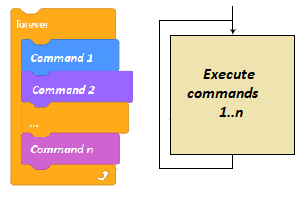
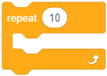
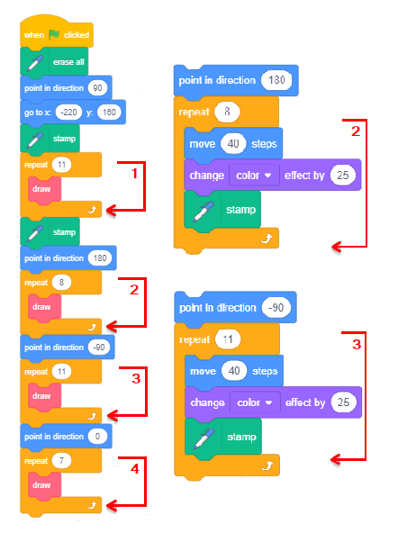
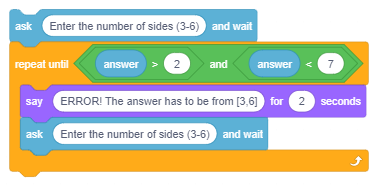
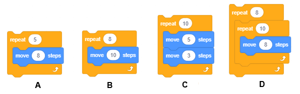
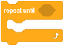
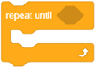

Repeating Steps¶
In the line drawing examples of the previous lesson, we used the repetition commands to get our sprites, moving with the pen down, to draw what we wanted, with less writing. For example, instead of adding 400 commands to draw a dotted line that is 400 pixels long, we added only five: four which repeat a pattern, and the fifth which sets the number of required repetitions.
In this lesson, we will connect the repetition commands to the motion and looks commands, so we can create different animations. In addition, we will introduce a command which allows you to enter input data, and blocks that store the values of logical expressions.
Blocks which enable repetition
One of the simplest examples of repetition commands is the command for the description of the so-called “forever loop”. The repeating commands make up the loop body. Their running can be stopped only by stopping the program.
For example, if you want to achieve an illusion that the cat is walking, the ballerina is dancing, and the butterfly is flying, all you need to do is add a script to them that repeats the blocks  and
and  in a forever loop.
in a forever loop.
Of course, a sprite should have at least two costumes and the wait period should be short, for example, 2 tenths of a second (0.2). The wait command between the costume changes is necessary so we can observe the change in the appearance. The human eye is not able to register changes at the speed the computer makes them. That is why we are “halting” the appearance of the costume by using the wait command, until our eye registers the previous image.
In the examples presented in the previous lesson we used the so-called “counting loops”. These are repetitions that know in advance how many times the loop body will be executed.

In Scratch, there is also a command to describe a loop when the number of repetitions is not known in advance, but depends on whether the condition for exiting the loop is fulfilled.

The condition for skipping loop body commands (the condition for exiting), is checked at the beginning of every loop, so there is a possibility that the loop will not be executed even once, if it is determined that the condition is fulfilled during the first check. It may also happen that the loop will continue running indefinitely if the condition for exiting the loop is never fulfilled.
 Study the following examples¶
Study the following examples¶
We saw that the stage is 480 pixels wide, 360 pixels high, and that every spot on the stage can be accessed by using its coordinates. In the following examples we will create images by stamping our sprites on specific locations. Of course, we can draw our own sprite shapes by using the paint editor - for example, a red circle, or a blue square, but since we want the images to be as attractive as possible, we will use the Star sprite - a yellow star from the sprites library.
To fine-tune the images, we will modify the star slightly. The original size of the star is 47х48 pixels, which we can see if we go to the Costumes tab.
We need the sprite size to be 40x40, that way exactly 12 stars fit in the space between the left and the right edge of the stage (480:40), and exactly 9 between the upper and lower edge (360:40). Furthermore, we want the sprite to be evenly filled with one color and not to have a contour line.

How we edit sprites
 We use the
We use the  tool to select the whole sprite
tool to select the whole sprite
 Remove the contour line (set the thickness of the line to 0)
Remove the contour line (set the thickness of the line to 0)
 We select the inner star and delete it
We select the inner star and delete it
 We select the whole sprite and set the size to 40х40.
We select the whole sprite and set the size to 40х40.
This customized star will be the only sprite used in the following examples.
The following example illustrates how stacking multiple loops can be used to construct complex loops. It also shows how using the tools of the built-in paint editor in vector mode can be used to edit sprites. The project itself consists of several simple tasks.
Example 1 - Project “Stars”¶

Task 1
Write a program which will draw 4 stars side by side, from the left to the right edge of the stage, they should all be differently colored and their size should be 120 pixels. The drawing should be done by using the  command.
command.
The desired result of completing the task can be seen in Image 1.
This result can be achieved by completing the following steps:
|
|
 we change the color of the sprite (using the change color effect command),
we change the color of the sprite (using the change color effect command), we leave a stamp,
we leave a stamp, we move the sprite its width to the right (120 steps),
we move the sprite its width to the right (120 steps), we change the color of the sprite (using the change color effect command),
we change the color of the sprite (using the change color effect command), we leave a stamp,
we leave a stamp, we move the sprite its width to the right (120 steps),
we move the sprite its width to the right (120 steps), we change the color of the sprite (using the change color effect command),
we change the color of the sprite (using the change color effect command), we leave a stamp.
we leave a stamp.{kind=link}
We can see that we repeated the steps 4-6 three times. We could have done the same with less writing, as the following Figure illustrates.
{kind=link}
The  block from the Control group allows us to stack the required script just once and set how many times it should repeat.
This block is an example of the so-called C-blocks, whose shape reminds us of the letter C. The slot inside a C-block takes a script in like an input field. Therefore, this block has two input fields: one for the number of repetitions and the other for the script.
Task 2
Write a program which will draw 12 stars side by side, from the left to the right edge of the stage, as shown in Image 2, the size of the stars should be 40x40.
This task will be similar to the previous one, but we don’t need to change the dimensions of the sprite. First, we need to put our sprite in the position x=-220, y=0, and then stamp it. After this, we should repeat the steps 4-6 from the previous task 11 times, with the difference that we would move the sprite 40 instead of 120 steps. How much time would it take to write this simple program without using the command for repetition?
The solution to the task is given in the following Figure.
{kind=link}

Task 3
Write a program which will draw 15 differently colored stars one on top of the other in the center of the stage, the size of the first star should be 320x320 (800% larger than the original), and each one after that should be smaller by 50, as is presented in the Image 3.
However, when we say smaller by 50, we mean 750%, 700% … larger than the original (and not 50 pixels smaller, or 50% of 800%). In order to avoid mixing the new image with the one made during the previous run, we need to add the erase all command at the beginning.
The solution to the task is given in the following Figure.


Task 4
Write a program that will draw a frame around the stage made up of differently colored stars, as seen in Image 4.
We can devise a solution by connecting solutions to 4 simpler problems.
Drawing stars along the top edge of the stage left to right.
Drawing stars along the right edge of the stage top to bottom.
Drawing stars along the bottom edge of the stage right to left.
Drawing the stars along the left edge of the stage bottom to top.
The first problem was solved in Task 2. The only thing you need to do is change the values which define the starting position of the star, instead of у=0 put у=160. The second problem can easily be solved by changing the orientation of the sprite, instead of moving to the right it should move down. The blocks for moving, changing color, and stamping should be repeated 8 times. The third and the fourth problem can be solved similarly you only need to change the orientation of the sprite and how many times it should leave a stamp. The solution for the entire task, as well as the parts showing the solution for the third and fourth problem, are given in the Figure below.
{kind=link}
The structure of the solution to this task, where multiple loops are strung together, is called linear composition.

Task 5
Write a program which will draw 4 stars side by side, from the left to the right edge of the stage, the size of the star should be 120 pixels. Each star should be composed of multiple stars of various sizes and colors, as the star from Task 3.
The result should look like Image 5.
The solution to this task has a complex structure. We will have to insert the loop form Task 3, which stamps smaller stars on top of larger ones, into the loop that should be repeated 4 times, which draws large stars side by side, like in Task 1. The complete solution is presented in the following Figure.

The structure of the solution to this task, where one loop is inserted into another, is called a nested composition.
Example 2 - Project “Geometric Shapes”¶
In this project, we will show how we can draw regular geometric shapes - triangles, squares, pentagons, and hexagons.
Regular polygons have sides that are all equal and interior angles that are all equal. We will draw the polygons starting from the top in the center of the screen, with sides that are 100 pixels long.
Let’s start by drawing a square. We will send the pen to the center of the screen, to the position (0,0), then we will put the pen down and repeat the following commands 4 times: move 100 steps, turn 90 degrees.
If we know that the sum of all exterior angles of a regular polygon is 360 о (see figure below), we can easily stack command blocks which will draw triangles, pentagons, and hexagons.

Parts of the scripts used for drawing the mentioned polygons are presented in the following Figure.

Note. You can also use the turn left command and try to draw a square or a hexagon in the position presented in the picture above.
As in the previous example, clicking on the green flag erases everything that was previously on stage, sets values for the color and size of the pen and gives instructions on how to use the project.
Since we want to keep the instruction on the stage, we will design a backdrop that has the instruction written on it, by using the built-in paint editor. The look of the stage after the running of the program is depicted in the following Figure.

Each script associated with the keys 3-6 on the keyboard will erase all previously made marks, hide the sprite, and then draw the corresponding polygon.
On the following Figure, you can see the scripts for starting the program and drawing a triangle and a square.

Upgrading the Project
We will upgrade the project so that it draws a geometric shape given by the user with the input data. In this version of the project, the drawing parameters are set by clicking on the green flag. Then the user is asked to type in the number of the sides of the polygon he/she wants to draw.
The input data block  is located in the Sensing group.
is located in the Sensing group.
After executing this command, Scratch remembers what the user put in the space called  .
.
It is expected that the user will type in one of the numbers between 3 and 6, however, if the user inputs a number which is not in this interval, the program will not work properly, and this should be prevented.
One of the ways to control the input data is to repeat the question until the user inputs a number from the correct interval.
{kind=link}
Once the correct input data has been received, it will be used to calculate the number of repetitions and the turning angle, therefore, all four polygons can be drawn with the same commands.

We will use parts of the previous projects for our next project. In it, we will show how we can use the nested composition of counting loops to draw effective images produced by repeating patterns. The pattern can be repeated after a certain number of steps - that way we will get the so-called decorative edges. Patterns can be repeated after turning to create an angle or after the combination of both movements.
Example 3 - Project “Ornaments”¶
If we repeat the counting loop that draws a regular pentagon from the previous example multiple times, we will draw an ornament - a more complex image composed of pentagons. For example, if we draw 20 such pentagons, moving from the left to the right edge of the stage, we will draw the following decorative border.

The drawing of the pentagon is enabled by the loop (2), which has been inserted into the exterior loop (1). The exterior loop is repeated 20 times. Every time the exterior loop runs, one pentagon is drawn in the current position of the pen, after which the sprite moves to the right with the pen up (3). The sprite moves only half of the length of the pentagon’s side, which is why the pentagons overlap.
However, if we repeat the drawing of the pentagons while changing the direction of the sprite before drawing each pentagon, so the sprite turns in a full circle, we will get the following ornament.

Since a full circle has 360 degrees, and the sprite turns 15 degrees after each pentagon (2) with the pen up (3), we need to repeat this procedure 24 times; therefore, the exterior loop (1) is repeated 24 times. If between drawings, the sprite changes an angle and also moves 10 steps, we will get a slightly different ornament.
{kind=link}
If we repeat the second ornament 4 times, going from the left to the right edge of the stage, we will get the image below.

Therefore, the drawing of the last decorative border is achieved with the nested composition which has 3 loops: the interior loop draws one pentagon (3), the middle loop (2) repeats the drawing of the pentagon and turns the sprite with the pen up 24 times, and the exterior loop (1) repeats the drawing of the circular ornament and moves the sprite with the pen up for the value of the ornament diameter.
This project allows us to draw each of the ornaments by pressing one of the keys 1-4 on the keyboard. In addition to these 4 scripts, there is a script which is triggered by clicking on the green flag, and one which is triggered with the message instruction. The message instruction is broadcast by each script at the end of the running process. When the sprite receives this message, it appears near the top of the screen and gives the instruction for drawing the ornament.

 Did you understand?¶
Did you understand?¶
Question 1¶
- yes
- no
- Correct.
Q-29: Is the condition that allows exiting from a loop called the loop body?
Question 2¶
- yes
- Correct.
- no
Q-30: Is stopping the program the only way to stop the running of the forever loop?
Question 3¶
- yes
- no
- Correct.
Q-31: Does the repeat until command know in advance how many times the loop body will be repeated?
Question 4¶
Q-32: Which of these forever loops allows the sprite to move left-right and look right, if the  ,
,  and
and  commands were previously executed? (Select all correct answers).
commands were previously executed? (Select all correct answers).

Question 5¶
Q-33: Which of these forever loops allows the sprite to change constantly between two positions: legs up and legs down, if the , and  commands were previously executed? (Select all correct answers).
commands were previously executed? (Select all correct answers).

Question 6¶
Q-34: Which of these counting loops allows the sprite to make 80 steps? (Select all correct answers).

Question 7¶
Q-35: Which of these counting loops allows the sprite to make 80 steps? (Select all correct answers).
{kind=link}
Question 8¶

- Hello END
- Scratch doesn't make a distinction between upper and lower case letters, therefore, the condition for exiting the loop has been fulfilled.
- What's your name
- This is the message for entering and not exiting.
- Goodbye
- Correct.
Q-36: What will the sprite say if the user’s answer to the question What’s your name is END?
Question 9¶
- A
- Correct.
- B
- That is the condition for entering the loop in this stack of commands.
- both
- The thing that is the condition for exiting the loop in (A) is, at the same time, the condition for entering the loop in (B).
- none
- The stack (А) allows the sprite to say Hello under the given condition.
Q-37: Which of these stacks will allow the sprite to say Hello if the user inputs the value 0?
{kind=link}
- not once
- The condition for exiting the loop wasn't fulfilled for the first 3 answers.
- 2 times
- The condition for exiting the loop wasn't fulfilled for number 3 either.
- 3 times
- Correct.
- 4 times
- When the condition for exiting the loop is fulfilled the commands from the loop body are not executed.
Q-38: How many times will the loop body (А) run, if the user inputs the answers to the question in the following order: 1, 2, 3, 0.
Question 10¶

- Correct.
- For example, it will accept 7 as a correct entry.
- For example, it won't accept 3 as a correct entry.
Q-39: Which letter marks the condition that will enable the check of the entered data to be correct?
 Try it!¶
Try it!¶
Exercise 1¶
Open Necklace. Create a project which displays a string of circles of different color and size starting from the left edge of the stage.

Instruction:
The image is achieved by changing the color of the pen and putting it down, the size of the pen should be 80, the sprite holding it should be hidden, and its starting position should be (-200,0). The loop should be repeated 5 times, and in it the sprite should move 80 steps with the pen up, and increase the pen color number by 30, and then put the pen down. The starting value of the pen color should be 0. You need to arrange for the previous drawing to be erased when the green flag is clicked.
Exercise 2¶
Closed Necklace. Create a project which draws a closed sequence of 12 circles of different color. The size of the pen should be 50.

Instruction:
The image is achieved by changing the color of the pen and putting it down, the size of the pen should be 50, the sprite holding it should be hidden, and its starting position should be (-50,50). The loop should be repeated 12 times, and in it the sprite should move 50 steps with the pen up, turn 30 degrees and increase the pen color number by 15, and then put the pen down to leave a mark. The starting value of the pen color should be 0. You need to arrange for the previous drawing to be erased when the green flag is clicked.
Exercise 3¶
Series of Circles. Create a project which displays a series of circles of different color and size, starting from the left edge of the stage.

Instruction:
The image is achieved by changing the size and the color of the pen and putting it down, the sprite holding the pen should be hidden, and its starting position should be (-200,0). The starting value for the pen color should be 0 and for the pen size 80. The loop should be repeated 5 times, and in it the number of the pen color should be increased by 30, and the size of the pen should be decreased by 10. The sprite should move 80 steps to the right, with the pen up, of course. The wait command should also be added to the loop, so you can follow the process more easily. You need to arrange for the previous drawing to be erased when the green flag is clicked.
Exercise 4¶
Concentric Circles. Create a project which displays a series of concentric circles of different colors in the center of the stage.

Instruction:
The image is achieved with changing the size and color of the pen and putting it down, the sprite holding it should be hidden and it should be placed in the center of the stage. The loop should be repeated 8 times, and in it the number of the pen color should be increased by 25 and the size of the pen should be decreased by 30. The starting value for the pen color should be 0 (red), and for the size 240 (the largest size). The wait command should also be added to the loop, so you can follow the process more easily. The pen should be lowered after each change. You need to arrange for the previous drawing to be erased when the green flag is clicked.
 Debug it!¶
Debug it!¶
Bug 1¶
The pupil wanted the sprite to walk between the left and the right edge of the stage. This is why he/she added the constant changing of the costume and moving 10 steps until reaching the edge, when the sprite turns. However, the pupil doesn’t like the fact that the sprite is walking upside-down towards the left edge of the stage. What should be done to fix this mistake?

Answer:
This can be fixed by adding the block to the sprite’s script.
Bug 2¶
The pupil wanted his butterfly sprite, which has two costumes - one with raised and one with lowered wings, to glide flapping its wings between two random positions. However, his program did not enable this. The butterfly glided between two positions, but its wings were either lowered or raised. Where did the pupil go wrong?

{kind=link}
 Summary¶
Summary¶
In this lesson, we covered commands for repetition. With examples of different projects we illustrated how to use each of the three types of loops: forever loop, counting loop - where we know the number of repetitions in advance, and the condition loop - where a pattern will be repeated until a certain condition has been fulfilled. We also showed that two or more loops could be combined to run one after another (linear composition), or one can be inserted into the other (nested composition). Furthermore, we learned how to use the data input command.
Scratch projects: 5Studio
New concepts: loop, loop body, the exit condition, forever loop, counting loop, condition loop, linear composition of loops, nested loop composition, data input command.
Scratch commands:  -
-  , , ;
, , ;  - ;
- ;
 - , ;
- , ;  -
-  ,
,  , .
, .
 Create a projects¶
Create a projects¶
Project 1 - “Hexagon”¶
Create a project which will draw a hexagon; the length of the sides should be generated randomly from the interval [100,200].
Project 2 - “Squares”¶
Create a project which offers to draw a square whose sides are parallel to the coordinate axes, or form a 45 о angle with the coordinate axes. The selection should be made with the key 1 or 2 on the keyboard. The instruction on how to use the program should be written on the stage backdrop, like in example 2. The length of the side should be 100 pixels.
Project 3 - “Triangles”¶
Write a project which offers to draw the following types of triangles:
а) equilateral, b) isosceles, c) right, d) acute, e) obtuse.
The project should have an instruction, which indicates which key triggers the drawing of which type of triangle.
Plan the coordinates for each triangle, and then draw the sides with the glide command.
Project 4 - “Quadrilaterals”¶
Write a project which offers to draw the following types of quadrilaterals:
square,
rectangle,
rhomb,
parallelogram,
trapezoid.
Plan the drawing, so all of the quadrilaterals mentioned above are drawn on the stage at the end of running process.
The instruction for the use of the program should appear on the stage when the green flag is clicked.
Events that trigger the drawing of particular types of quadrilaterals should be associated with keyboard keys of your choice.
Note. “Quadrilaterals” are elaborated in the mathematics curriculum for the sixth grade.